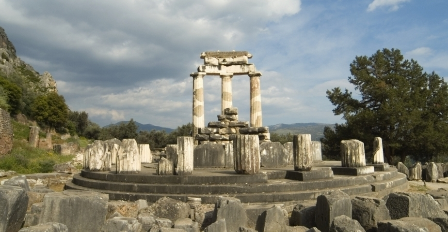
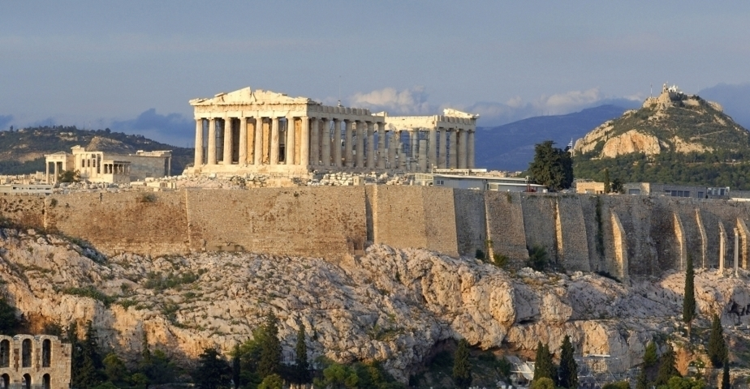
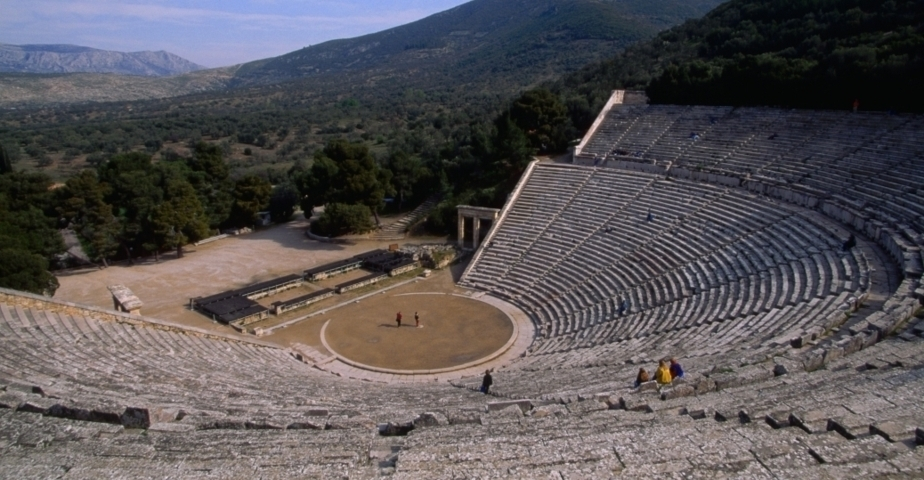
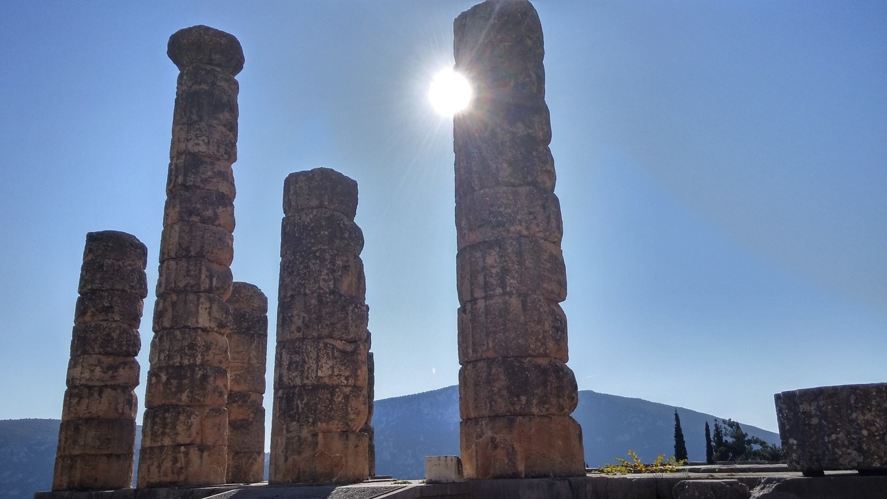
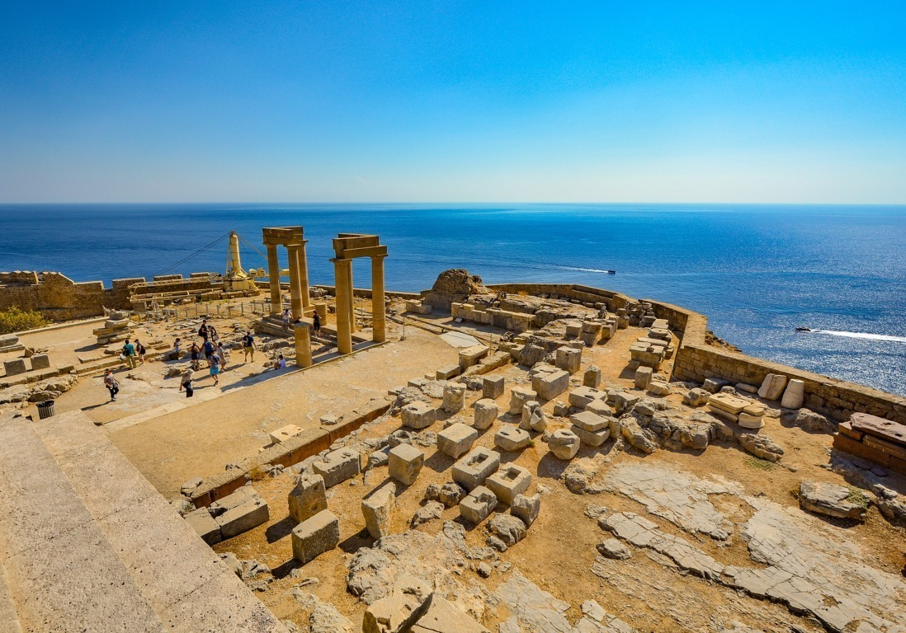
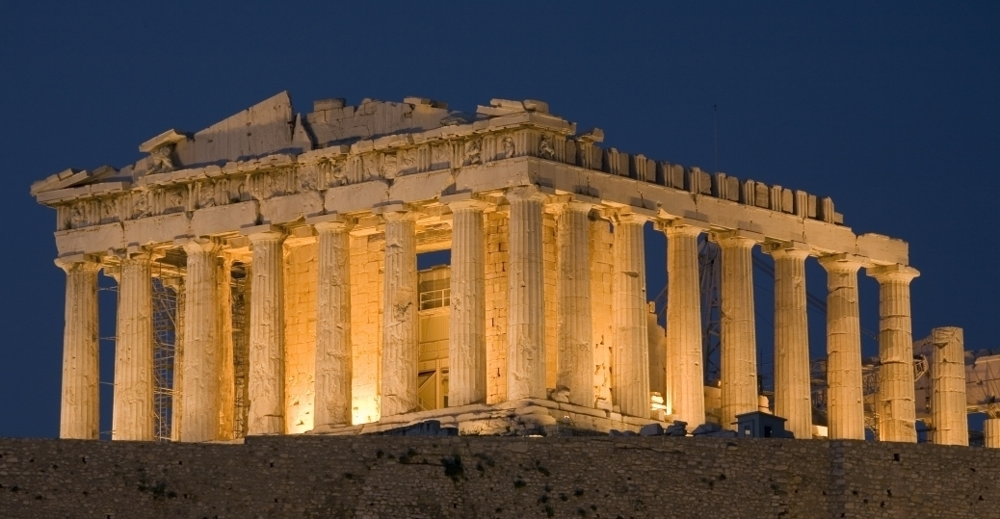

The Ancient Civilization
☰ Menu
The Ancient Greece
Tale of Ancient Greece

Ancient Greece was a civilization belonging to a period of Greek history from the Greek Dark Ages of the 12th-9th centuries BC to the end of antiquity (c. 600 AD). Immediately following this period was the beginning of the Early Middle Ages and the Byzantine era.[1] Roughly three centuries after the Late Bronze Age collapse of Mycenaean Greece, Greek urban poleis began to form in the 8th century BC, ushering in the period of Archaic Greece and colonization of the Mediterranean Basin. This was followed by the period of Classical Greece, an era that began with the Greco-Persian Wars, lasting from the 5th to 4th centuries BC. Due to the conquests by Alexander the Great of Macedonia, Hellenistic civilization flourished from Central Asia to the western end of the Mediterranean Sea.

Archaic period
Dipylon Vase of the late Geometric period, or the beginning of the Archaic period, c. 750 BC.
Political geography of ancient Greece in the Archaic and Classical periods
In the 8th century BC, Greece began to emerge from the Dark Ages which followed the fall of the Mycenaean civilization. Literacy had been lost and Mycenaean script forgotten, but the Greeks adopted the Phoenician alphabet, modifying it to create the Greek alphabet. Objects with Phoenician writing on them may have been available in Greece from the 9th century BC, but the earliest
A mercantile class arose in the first half of the 7th century BC, shown by the introduction of coinage in about 680 BC.[12] This seems to have introduced tension to many city-states. The aristocratic regimes which generally governed the poleis were threatened by the new-found wealth of merchants, who in turn desired political power. From 650 BC onwards, the aristocracies had to fight not to be overthrown and replaced by populist tyrants. This word derives from the non-pejorative Greek τύραννος tyrannos, meaning 'illegitimate ruler', and was applicable to both good and bad leaders alike.[13][14]
Athens suffered a land and agrarian crisis in the late 7th century BC, again resulting in civil strife. The Archon (chief magistrate) Draco made severe reforms to the law code in 621 BC (hence "draconian"), but these failed to quell the conflict. Eventually the moderate reforms of Solon (594 BC), improving the lot of the poor but firmly entrenching the aristocracy in power, gave Athens some stability.
By the 6th century BC several cities had emerged as dominant in Greek affairs: Athens, Sparta, Corinth, and Thebes. Each of them had brought the surrounding rural areas and smaller towns under their control,
Classical Greece
In 499 BC, the Ionian city states under Persian rule rebelled against the Persian-supported tyrants that ruled them.[17] Supported by troops sent from Athens and Eretria, they advanced as far as Sardis and burnt the city down, before being driven back by a Persian counterattack.[18] The revolt continued until 494, when the rebelling Ionians were defeated.[19] Darius did not forget that the Athenians had assisted the Ionian revolt,

Hellenistic Greece
The Hellenistic period lasted from 323 BC, which marked the end of the wars of Alexander the Great, to the annexation of Greece by the Roman Republic in 146 BC. Although the establishment of Roman rule did not break the continuity of Hellenistic society and culture, which remained essentially unchanged until the advent of Christianity, it did mark the end of Greek political independence. During the Hellenistic period,

Political structure
Further information: History of citizenship § Ancient Greece Ancient Greece consisted of several hundred relatively independent city-states (poleis). This was a situation unlike that in most other contemporary societies, which were either tribal or kingdoms ruling over relatively large territories. Undoubtedly the geography of Greece—divided and sub-divided by hills, mountains, and rivers—contributed to the fragmentary nature of ancient Greece. On the one hand, the ancient Greeks had no doubt that they were "one people"; they had the same religion, same basic culture, and same language. Furthermore, the Greeks were very aware of their tribal origins; Herodotus was able to extensively categorise the city-states by tribe. Yet, although these higher-level relationships existed, they seem to have rarely had a major role in Greek politics. The independence of the poleis was fiercely defended; unification was something rarely contemplated by the ancient Greeks. Even when, during the second Persian invasion of Greece, a group of city-states allied themselves to defend Greece, the vast majority of poleis remained neutral, and after the Persian defeat, the allies quickly returned to infighting.[52] Thus, the major peculiarities of the ancient Greek political system were firstly, its fragmentary nature, and that this does not particularly seem to have tribal origin, and secondly, the particular focus on urban centers within otherwise tiny states. The peculiarities of the Greek system are further evidenced by the colonies that they set up throughout the Mediterranean Sea, which, though they might count a certain Greek polis as their 'mother' (and remain sympathetic to her), were completely independent of the founding city.

